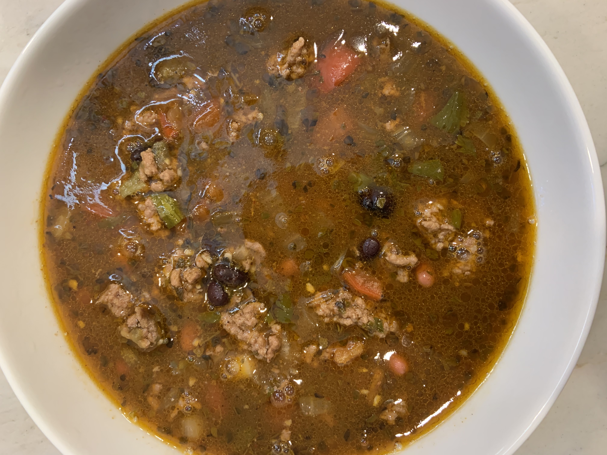

Entrees | 12.11.20
The tomato-less chili you didn't know you needed.
Chili has been a staple in my family for years, but I unfortunately grew an allergy to tomatoes. To curb my cravings for this hearty soup, I created a tomato-less chili that tastes like one with tomatoes.
Ingredients:
2 lbs of Ground Beef
1 can of Black Beans
1 can of Pinto Bens
1 can of Kidney Beans
1 Red Bell Pepper
1 Red Onion
1 bunch of Cilantro
1 jar of Tomatillo Sauce (Ingredients on jar will not have tomatoes.)
4 cups of Beef Broth
1 1/2 tbsp minced Garlic
1 tbsp Worcestershire Sauce
1 1/2 tbsp of Oregano (Dried)
2 tbsp Chili Powder/li>
1 tsp Paprika
2 tsp Cumin
1 tsp Black Pepper
1/2 tsp Salt
1 1/2 tsp Onion Powder
Instructions:
Brown the Ground Beef in a large pan.
While the beef is browning, chop the Red Bell Pepper, Red Onion, and Cilantro.
Put the browned Ground Beef, Red Bell Pepper Red Onion, and Cilantro into a slow cooker.
Drain the Black Beans, Kidney Beans, and Pinto Beans. Add the drained beans to the slow cooker.
Add the Tomatillo Saucee, Beef Broth, Garlic, Worcestershire Sauce, and all spices to the slow cooker.
Mix, cover, and cook on high for 5-6 hours.
After 4 hours taste test, and add more spices as needed.

{kind=link}